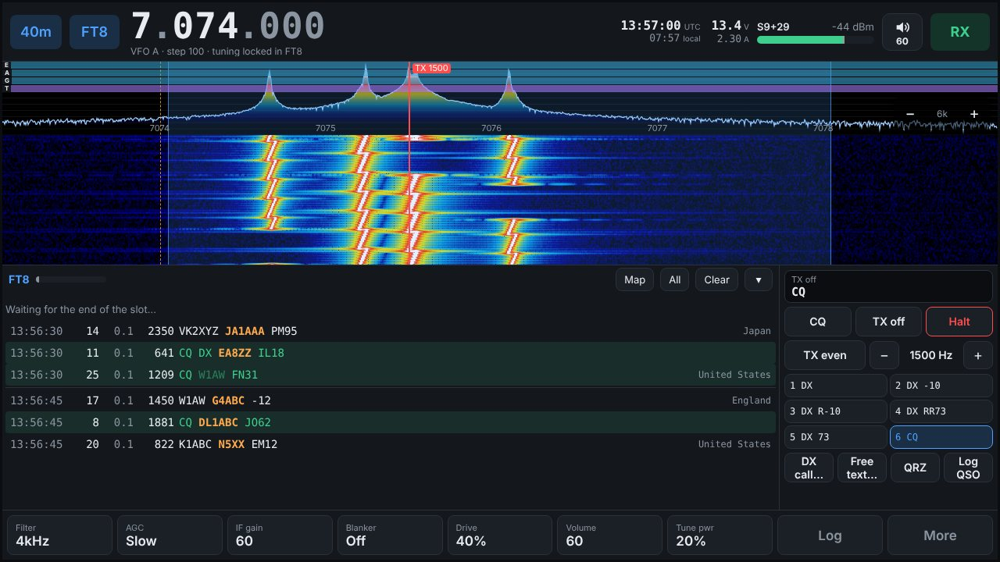
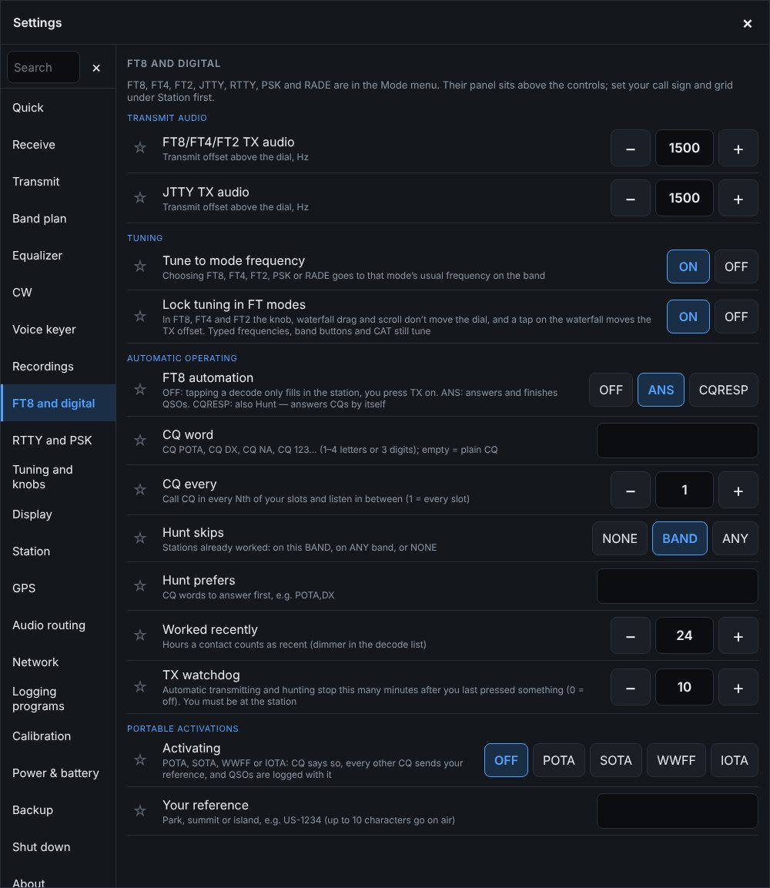
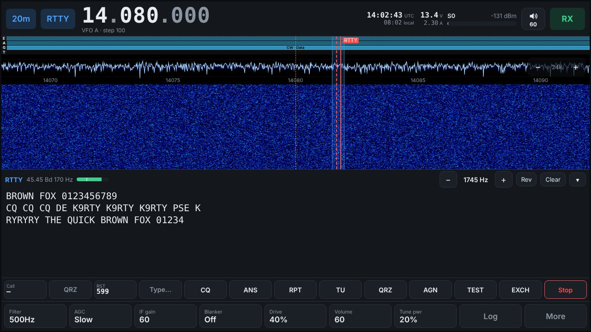
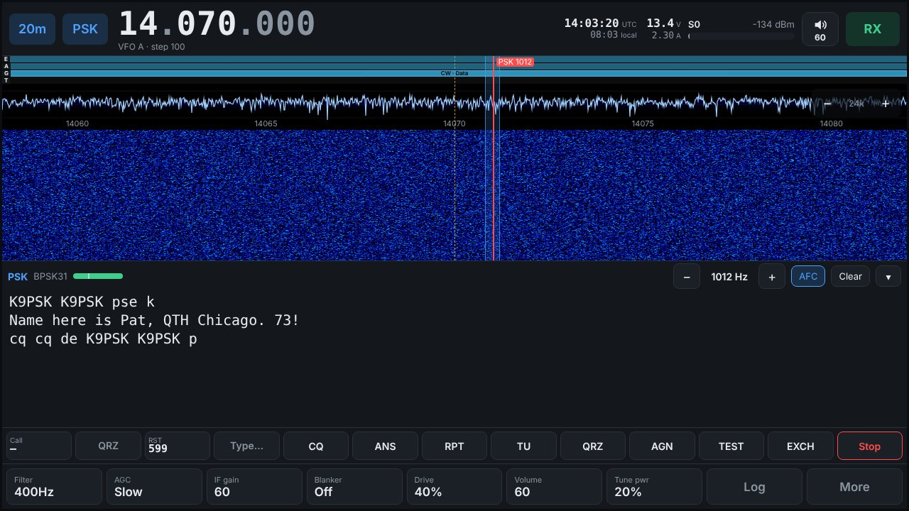
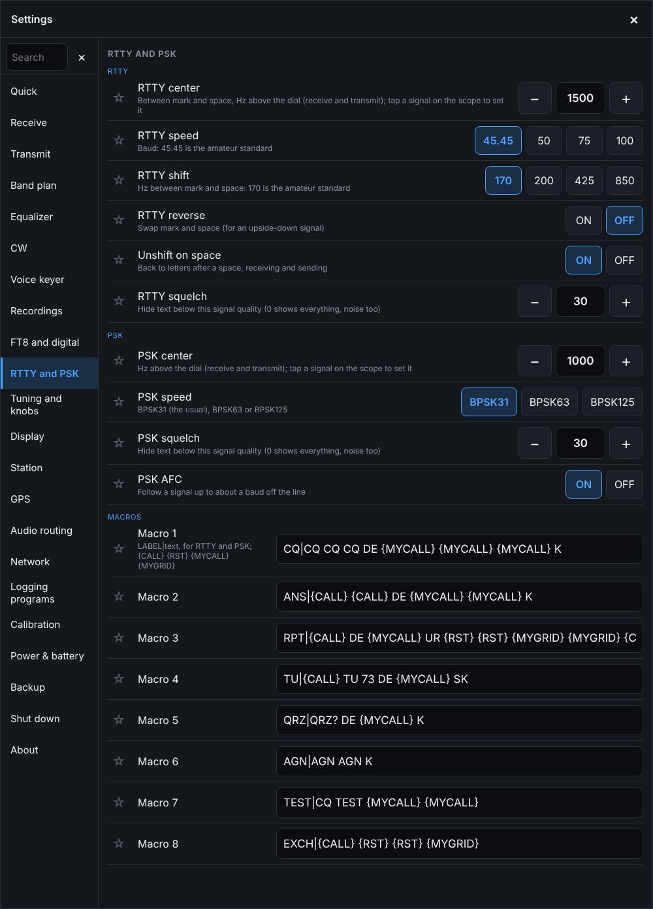

Digital modes#
FT8, FT4, FT2, JTTY, RTTY, PSK and FreeDV RADE V1 run on the radio itself: pick them from the mode sheet. Set My call sign and My grid first (More → Station). FT8 and FT4 need the radio's clock right to within about a second; Raspberry Pi OS keeps it with internet time, and in the field a GPS can.
JS8 works with JS8Call running on the radio: see JS8 below. To use WSJT-X or fldigi instead, choose DIGI and see Connecting other programs.
FT8, FT4 and FT2#

Decodes appear at the end of each slot (15 s FT8, 7.5 s FT4, 3.75 s FT2): time, SNR, time offset, audio frequency, message and the sender's country. CQs are green, messages to you red, your own transmissions amber. In the sender's call, bold orange means never worked, dimmed means worked on this band and a dotted underline worked on another band. All / CQ + me filters the list. Hold a decode for the station's details. Long country names are shortened ("Fed. Rep. of Germany" shows as Germany); the full name is in the station's details. Stations with a long or unusual call (such as PI75VRZA, sent as a "nonstandard" call) can be answered like any other.
Making a QSO
- CQ calls CQ in your next slot, or tap a decode to answer it.
- Replies, reports, RR73 and 73 then follow automatically, and the QSO is logged when you send RR73 or 73.
- Halt stops at once. A CQ with no answer stops after 20 tries, any other message after 6.
The radio only transmits while TX on is lit. TX even/odd is your slot; − / + moves your audio frequency (the red line on the scope, or drag it). 1–6 pick the next message by hand; DX call… sets the station, Free text… sends up to 13 characters, Log QSO logs now.
On a small screen such as the sBitx's 800×480 the controls are compacted so they fit without scrolling: the message buttons show only how each message ends (1 EN54, 2 −10, … 6 CQ; the whole message is in the status line above them), the buttons read DX…, Text… and Log, and the list leaves out the time-offset column.
Map shows a world map of the grids heard (yellow), grids in your log (green, red when logged today) and your own grid. It works without internet.
Tuning: choosing FT8, FT4, FT2, JTTY, PSK or RADE tunes to that mode's usual frequency on the band (Tune to mode frequency). In the FT modes the tuning is locked (Lock tuning in FT modes): the knob, a drag and the arrow keys don't move the dial, and a tap on the waterfall moves the TX offset instead. Typed frequencies, the band buttons and CAT still tune; VFO lock on the Quick page turns the FT lock off for a while.
FT2 is the open FT2 of WSJT-X Improved 3.1 (FT4's coding at twice the speed). It is experimental and needs a clock within about ±60 ms.
Automatic operating#
| FT8 automation | Behaviour |
|---|---|
| ANS (default) | answers and finishes QSOs as above |
| OFF | tapping a decode only fills in the station and the next message; you press TX on and pick the messages |
| CQRESP | adds a Hunt button: the radio answers CQs by itself, works and logs each QSO, then moves to the next CQ until you press Halt |
Hunting skips calls already worked (Hunt skips: this BAND, ANY band or
NONE), calls that did not answer you in the last 15 minutes and CQs aimed
elsewhere; of the rest it answers the strongest, preferring the words in
Hunt prefers (e.g. POTA,DX) and calls never worked. CQ word adds a word
to your CQ (CQ POTA, CQ DX); CQ every 2–4 calls only in every 2nd–4th
slot. TX watchdog (10 minutes) stops automatic transmitting when you have
not touched anything for that long: automatic operation still needs you at
the station.
Portable activations#
Set Activating (POTA, SOTA, WWFF or IOTA) and Your reference. Your
CQ says CQ POTA, every other CQ sends the reference, and every QSO (FT8 or
logged by hand) is logged with MY_SIG, MY_SIG_INFO and the matching
MY_*_REF field. The logbook's Activations tab downloads each day's file
for the program (see Logbook).

Transmit audio
| Setting | Console name | Default | Values | What it does |
|---|---|---|---|---|
| FT8/FT4/FT2 TX audio | FT8_TXF | 1500 | 200–3000 | Transmit offset above the dial, Hz |
| JTTY TX audio | JTTY_TXF | 1500 | 200–3000 | Transmit offset above the dial, Hz |
Tuning
| Setting | Console name | Default | Values | What it does |
|---|---|---|---|---|
| Tune to mode frequency | MODEQRG | ON | ON, OFF | Choosing FT8, FT4, FT2, JS8, JTTY, PSK or RADE goes to that mode’s usual frequency on the band |
| Lock tuning in FT modes | FTXLOCK | ON | ON, OFF | In FT8, FT4 and FT2 the knob, waterfall drag and scroll don’t move the dial, and a tap on the waterfall moves the TX offset. Typed frequencies, band buttons and CAT still tune |
Automatic operating
| Setting | Console name | Default | Values | What it does |
|---|---|---|---|---|
| FT8 automation | FT8_AUTO | ANS | OFF, ANS, CQRESP | OFF: tapping a decode only fills in the station, you press TX on. ANS: answers and finishes QSOs. CQRESP: also Hunt — answers CQs by itself |
| CQ word | FT8_CQ | (empty) | text | CQ POTA, CQ DX, CQ NA, CQ 123… (1–4 letters or 3 digits); empty = plain CQ |
| CQ every | FT8_CQEVERY | 1 | 1–4 | Call CQ in every Nth of your slots and listen in between (1 = every slot) |
| Hunt skips | FT8_SKIP | BAND | NONE, BAND, ANY | Stations already worked: on this BAND, on ANY band, or NONE |
| Hunt prefers | FT8_PREFER | (empty) | text | CQ words to answer first, e.g. POTA,DX |
| Worked recently | FT8_RECENT | 24 | 0–720 | Hours a contact counts as recent (dimmer in the decode list) |
| TX watchdog | FT8_WDOG | 10 | 0–60 | Automatic transmitting and hunting stop this many minutes after you last pressed something (0 = off). You must be at the station |
Portable activations
| Setting | Console name | Default | Values | What it does |
|---|---|---|---|---|
| Activating | XOTA | OFF | OFF, POTA, SOTA, WWFF, IOTA | POTA, SOTA, WWFF or IOTA: CQ says so, every other CQ sends your reference, and QSOs are logged with it |
| Your reference | XOTA_REF | (empty) | text | Park, summit or island, e.g. US-1234 (up to 10 characters go on air) |
RTTY#

Baudot RTTY, 45.45 baud and 170 Hz shift by default, as audio FSK on upper sideband with mark the higher tone. One frequency (the dial plus RTTY center) is used to receive and transmit.
- Tune: tap a signal on the scope and the M and S lines move to it; − / + nudge 5 Hz. The panel shows how far a copied signal is from the lines. Rev swaps mark and space.
- Receive: the text runs on in the panel. The bar is the signal quality; its tick is the squelch, below which text is hidden.
- Send: Type… or a macro keys the radio, sends the text and un-keys. More text sent meanwhile goes in the same over; Stop ends it.
PSK#

BPSK31, BPSK63 or BPSK125 on upper sideband at the dial plus PSK center. The panel works like RTTY's. Tap a signal to put the red line on it, drag the line, or nudge 1 Hz with − / +. AFC pulls in a signal up to about one baud away and follows drift.
RTTY and PSK share the eight macros (LABEL|text, with {CALL}, {RST},
{MYCALL}, {MYGRID}; hold a button to edit it) and the Call and RST
fields.

RTTY
| Setting | Console name | Default | Values | What it does |
|---|---|---|---|---|
| RTTY center | RTTY_TXF | 1500 | 200–2900 | Between mark and space, Hz above the dial (receive and transmit); tap a signal on the scope to set it |
| RTTY speed | RTTY_BAUD | 45.45 | 45.45, 50, 75, 100 | Baud: 45.45 is the amateur standard |
| RTTY shift | RTTY_SHIFT | 170 | 170, 200, 425, 850 | Hz between mark and space: 170 is the amateur standard |
| RTTY reverse | RTTY_REV | OFF | ON, OFF | Swap mark and space (for an upside-down signal) |
| Unshift on space | RTTY_USOS | ON | ON, OFF | Back to letters after a space, receiving and sending |
| RTTY squelch | RTTY_SQL | 30 | 0–100 | Hide text below this signal quality (0 shows everything, noise too) |
PSK
| Setting | Console name | Default | Values | What it does |
|---|---|---|---|---|
| PSK center | PSK_TXF | 1000 | 200–2900 | Hz above the dial (receive and transmit); tap a signal on the scope to set it |
| PSK speed | PSK_MODE | BPSK31 | BPSK31, BPSK63, BPSK125 | BPSK31 (the usual), BPSK63 or BPSK125 |
| PSK squelch | PSK_SQL | 30 | 0–100 | Hide text below this signal quality (0 shows everything, noise too) |
| PSK AFC | PSK_AFC | ON | ON, OFF | Follow a signal up to about a baud off the line |
Macros
| Setting | Console name | Default | Values | What it does |
|---|---|---|---|---|
| Macro 1 | RTM1 | CQ|CQ CQ CQ DE {MYCALL} {MYCALL} {MYCALL} K | text | LABEL|text, for RTTY and PSK; {CALL} {RST} {MYCALL} {MYGRID} |
| Macro 2 | RTM2 | ANS|{CALL} {CALL} DE {MYCALL} {MYCALL} K | text | Same as macro 1 |
| Macro 3 | RTM3 | RPT|{CALL} DE {MYCALL} UR {RST} {RST} {MYGRID} {MYGRID} {CALL} DE {MYCALL} K | text | Same as macro 1 |
| Macro 4 | RTM4 | TU|{CALL} TU 73 DE {MYCALL} SK | text | Same as macro 1 |
| Macro 5 | RTM5 | QRZ|QRZ? DE {MYCALL} K | text | Same as macro 1 |
| Macro 6 | RTM6 | AGN|AGN AGN K | text | Same as macro 1 |
| Macro 7 | RTM7 | TEST|CQ TEST {MYCALL} {MYCALL} | text | Same as macro 1 |
| Macro 8 | RTM8 | EXCH|{CALL} {RST} {RST} {MYGRID} | text | Same as macro 1 |
JTTY#
Keyboard chat in a narrow (about 125 Hz) 4-GFSK signal with error correction, compatible with WSJT-X's JTTY. Each line is one station's message, growing as frames arrive. Tap a line to transmit on its frequency; Type a message… sends up to 80 characters at a time, CQ sends a CQ, Stop clears the queue.
Choosing JTTY tunes to its calling frequency on the band (Tune to mode frequency). These are still preliminary:
| Band | 80 m | 40 m | 30 m | 20 m | 17 m | 15 m | 12 m | 10 m |
|---|---|---|---|---|---|---|---|---|
| MHz | 3.575 | 7.090 | 10.140 | 14.090 | 18.100 | 21.090 | 24.920 | 28.090 |
There is none on 60 m; there the dial stays where it is.
JS8#
JS8 is JS8Call's keyboard-to-keyboard mode: FT8-style weak-signal frames
carrying free text, directed messages (W1ABC SNR?, @ALLCALL CQ),
heartbeats, relays and a message inbox. The modem is JS8Call itself
(JS8Call-improved, a separate GPL program), running on the radio's
desktop: it controls the radio through jeSDR's Hamlib server, exchanges
audio through jeSDR's PipeWire devices like WSJT-X, and jeSDR reads and drives it
through JS8Call's TCP API. Nothing of JS8Call is built into jeSDR.
Set-up (once)
- Install JS8Call: run the jeSDR installer again and answer yes to
Install JS8Call (it puts JS8Call-improved's ARM64 AppImage in
/opt/js8calland adds it to the menu). If JS8Call had no settings yet, the installer sets the rig and the API up for jeSDR. - In JS8Call, Settings:
- Radio: rig Hamlib NET rigctl, network server
127.0.0.1:4532, PTT method CAT, mode Data/Pkt (or None). - Audio: input jeSDR Receive, output jeSDR Transmit, as for WSJT-X.
- Reporting → API: Enable TCP Server API and Accept TCP
Requests, port 2442 (if you change it, set JS8Call API,
JS8_API, to match). - General: your call sign and grid.
- Radio: rig Hamlib NET rigctl, network server
Using it
- Choose JS8 in the mode sheet. It tunes to the band's JS8 frequency (Tune to mode frequency) and connects to JS8Call; Open JS8Call starts JS8Call on the radio's desktop if it isn't running (log in to the desktop first).
The panel's tabs:
- Band: what JS8Call hears, one line per offset, growing as frames arrive (the line ends at JS8Call's ♢ end mark). The number on the right is the SNR. Tap a line to answer its station.
- Messages: directed messages (to you in red, also @ALLCALL, @HB and groups) and what you send (amber). Messages to you also pop up.
- Calls: the stations JS8Call has heard, newest first.
- Inbox: JS8Call's message inbox.
Clear empties the list on show (band lines, messages or calls; JS8Call's own inbox stays). Entries older than JS8 entries kept (
JS8_STALE, 30 minutes; 0 = keep them) go by themselves.- Type a message… sends through JS8Call at its next cycle (JS8 is upper
case; the chips add
@ALLCALL,SNR?,GRID?,INFO?and so on). CQ sends@ALLCALL CQ CQ CQ <grid>, HB a heartbeat, Stop stops JS8Call transmitting. - Slow / Normal / Fast / Turbo set JS8Call's speed (25 / 50 / 80 / 160 Hz wide; 30 / 15 / 10 / 6 s frames). Both stations need the same speed.
- Your transmit offset is the red JS8 line on the scope: tap the scope
or drag the line to move it, or use − JS8 1500 Hz +. It is the same
as JS8Call's offset both ways (JS8 offset,
JS8_TXF).
The band plan checks the actual JS8 signal (offset and width) before JS8Call can transmit. While in JS8, JS8Call asking for PKTUSB or USB keeps the radio in JS8. QSOs are logged by JS8Call (or its logging programs); jeSDR's own log form offers MFSK / JS8.
| Setting | Console name | Default | Values | What it does |
|---|---|---|---|---|
| JS8 offset | JS8_TXF | 1500 | 100–2900 | Where JS8Call transmits, Hz above the dial; kept the same as JS8Call’s offset |
| JS8Call API | JS8_API | 127.0.0.1:2442 | host:port | JS8Call's TCP API. Empty = no link |
| JS8 entries kept | JS8_STALE | 30 | 0–1440 minutes | Band lines, messages and stations heard older than this are cleared (0 = keep) |
| Band | 80 m | 40 m | 30 m | 20 m | 17 m | 15 m | 12 m | 10 m |
|---|---|---|---|---|---|---|---|---|
| JS8 (MHz) | 3.578 | 7.078 | 10.130 | 14.078 | 18.104 | 21.078 | 24.922 | 28.078 |
JS8Call's default 60 m frequency (5.363 MHz) is not a US channel, so on 60 m the dial stays where it is.
FreeDV RADE V1#
RADE is FreeDV's machine-learning digital voice: about 1.5 kHz wide, with good speech down to low SNR. It is built into every jeSDR release.
- Choose RADE (it tunes to the band's FreeDV frequency).
- Tune within about ±50 Hz of the other station.
- Talk with the mic PTT. Set the level with Mic gain; the equalizers, compressor and noise reduction do not apply to RADE.
The panel shows sync, SNR and the frequency offset while receiving, and the speaker plays the decoded speech. While you transmit the speaker plays your own voice at TX monitor, never the modem signal.
Sideband. FreeDV's convention is upper sideband on every band, and that
is the default. Some nets below 10 MHz still use lower sideband, so the RADE
panel has USB / LSB / Auto buttons (RADE sideband, RADESB). Auto
uses LSB below 10 MHz and USB above, like voice SSB, and the button shows
which one it is using. Both stations must use the same sideband, or neither
decodes the other. The passband on the waterfall shows the side, and CAT
programs read the mode as USB or LSB to match. The sideband doesn't change
during a transmission.
| Setting | Console name | Default | Values | What it does |
|---|---|---|---|---|
| RADE sideband | RADESB | USB | USB, LSB, AUTO | USB on every band (FreeDV’s convention), LSB, or Auto: LSB below 10 MHz and USB above |
FreeDV Reporter#
FreeDV Reporter lists the FreeDV stations on the
air. With FreeDV Reporter on (FDVR ON, More → FT8 and digital):
- Reporter in the RADE panel opens the list: frequency, call sign, grid and distance, whether the station is transmitting (red), whom it last heard and at what SNR, and its message. This band shows the stations within 250 kHz of the dial, All every band. Tap a station to tune to it. The button shows a green dot and the number of stations while connected.
- The stations also show as green labels on the scope (red while they transmit), with the cluster spots; tap one to tune to it.
- You are listed while the radio is in RADE, with
MYCALL,MYGRID, your frequency (on air, with a transverter's offset), when you transmit, and Reporter message (FDVR_MSG). In any other mode jeSDR hides you and only watches. Without MYCALL and MYGRID it only watches. - A station asking you to QSY (from its FreeDV Reporter window) pops up.
jeSDR does not yet send or decode the call sign RADE carries in its
end-of-over, so stations do not report hearing you by call, and jeSDR does
not report the stations it hears. reporter on the console shows the
connection.
| Setting | Console name | Default | Values | What it does |
|---|---|---|---|---|
| FreeDV Reporter | FDVR | OFF | ON, OFF | Show FreeDV stations; list yourself while in RADE |
| Reporter message | FDVR_MSG | (empty) | text | Your message on FreeDV Reporter |
| Reporter server | FDVR_HOST | qso.freedv.org | host[:port] | The server (WebSocket, port 80) |
Mode frequencies#
| Band | FT8 | FT4 | FT2 | PSK | RADE |
|---|---|---|---|---|---|
| 80 m | 3.573 | 3.5755 | 3.578 | 3.580 | 3.625 |
| 60 m | 5.357 | – | – | – | 5.4035 |
| 40 m | 7.074 | 7.0475 | 7.052 | 7.070 | 7.177 |
| 30 m | 10.136 | 10.140 | 10.144 | 10.142 | – |
| 20 m | 14.074 | 14.080 | 14.084 | 14.070 | 14.236 |
| 17 m | 18.100 | 18.104 | 18.108 | 18.100 | 18.118 |
| 15 m | 21.074 | 21.140 | 21.144 | 21.070 | 21.313 |
| 12 m | 24.915 | 24.919 | 24.923 | 24.920 | 24.933 |
| 10 m | 28.074 | 28.180 | 28.184 | 28.120 | 28.330 |